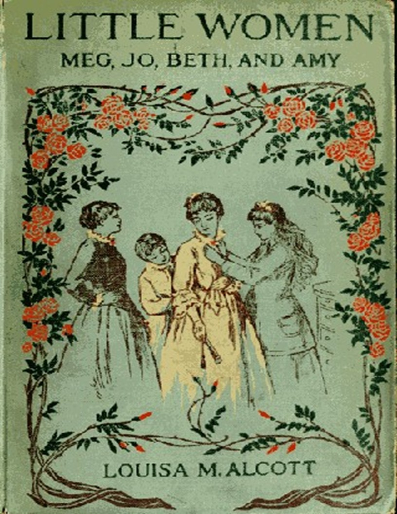

Bacaan
Terpilih
🌙 / ☀️

← Perpustakaan
Wanita-wanita Kecil; atau, Meg, Jo, Beth, dan Amy
Louisa May Alcott
1868
Daftar Isi
Tentang Buku Ini ?
Kata Pengantar
Bermain Sebagai Peziarah.
Laurence Boy.
Beban.
Berskap Ramah Tetangga.
Beth Menganggap Istana Itu Indah.
Lembah Penghinaan Amy.
Jo Bertemu Apollyon.
Meg Pergi Ke Vanity Fair.
Pc Dan Po
Eksperimen.
Kamp Laurence.
Istana Di Udara.
Rahasia.
Sebuah Telegram.
Surat-Surat.
Kecil Yang Setia.
Hari-Hari Kelam.
Surat Wasiat Amy.
Rahasia.
Laurie Membuat Kenakalan, Dan Jo Menciptakan Kedamaian.
Padang Rumput Yang Menyenangkan.
Bibi March Menyelesaikan Pertanyaan Itu.
Gosip.
Pernikahan Pertama.
Upaya Artistik.
Pelajaran Sastra.
Pengalaman Domestik.
Panggilan.
Konsekuensi.
Koresponden Asing Kami.
Masalah Yang Lembut.
Jurnal Jo.
Seorang Teman.
Duka.
Rahasia Beth.
Kesan Baru.
Di Rak.
Laurence Yang Malas.
Lembah Bayangan.
Belajar Untuk Melupakan.
Sendirian.
Kejutan.
Tuan Dan Nyonya.
Daisy Dan Demi.
Di Bawah Payung.
Waktu Panen.